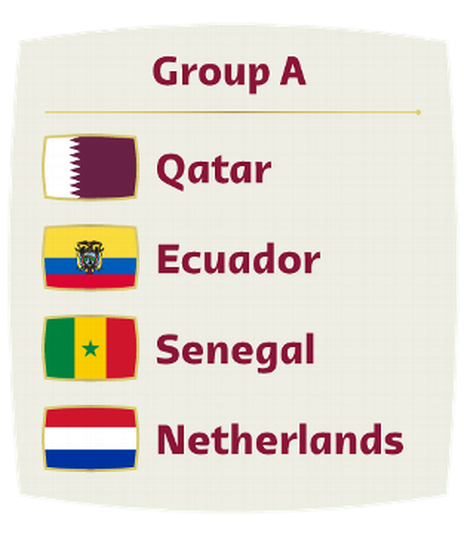
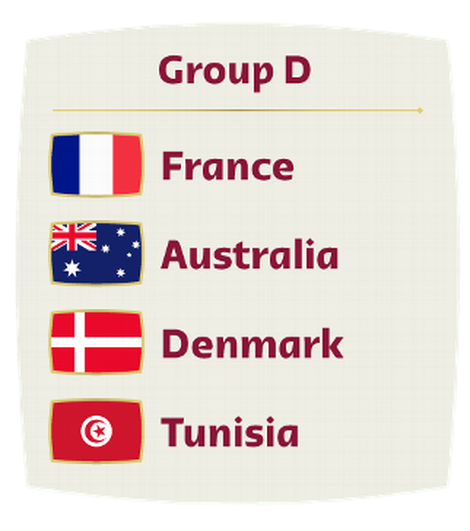
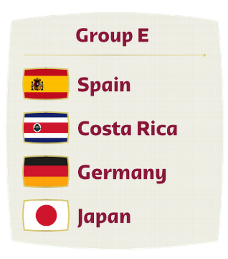

GRUPO A

En el Grupo A, Ecuador tiene sobre el papel una fase inicial accesible. Países Bajos, que es el país de más peso futbolístico, es el rival más serio, y llega con la tarea de reivindicarse después de no clasificar al Mundial de 2018.
GRUPO B
Estados Unidos, en el Grupo B, se mide ante una Inglaterra (quinto en el ranking de la FIFA) con un plantel muy destacado y un Gales revitalizado tras el repechaje y motivado por Gareth Bale.
GRUPO C
Argentina, favorito y con un invicto memorable (y tercero en el ranking mundial), se enfrentará a al México (12) del Tata Martino y a Arabia Saudita y Polonia en el Grupo C.
GRUPO D

El campeón del mundo, Francia, que llega con mala racha (perdió ante Croacia y Dinamarca en la UEFA Nations League), tendrá al frente un grupo que parece sencillo: Australia, Dinamarca (llega enchufado en la Nations League) y Túnez.
GRUPO E

España y Costa Rica se enfrentarán en el Grupo E frente a Alemania, que siempre es favorito, y Japón, uno de los asiáticos más fuertes. Es quizá el grupo de la muerte.
GRUPO F
Canadá competirá ante dos selecciones que han dominado el fútbol mundial en los últimos años: Bélgica y Croacia, subcampeón de 2018. Canadá vuelve a un Mundial tras su única clasificación en México 1986.
GRUPO G
En el Grupo G, Brasil (primero en el ranking de la FIFA) tiene un panorama sin rivales históricos pero siempre desafiante: sus rivales son Serbia, Suiza y Camerún.
GRUPO H
Uruguay (13 en el ranking), en el Grupo H se mide ante Portugal (noveno en la clasificación mundial), comandado por un Cristiano Ronaldo que quiere cerrar su carrera por lo alto, además de Ghana y Corea del Sur.